Wildlife
The island of Sri Lanka is a haven for nature enthusiasts, boasting a remarkable array of diverse and exotic wildlife. Explore the country's lush jungles, verdant national parks, and pristine coastal sanctuaries teeming with life. Encounter the majestic Sri Lankan elephant, elusive leopard, vibrant bird species, and countless other fascinating creatures that call this tropical paradise home. Embark on an unforgettable journey to discover the enchanting world of Sri Lanka's wildlife, and immerse yourself in the breathtaking beauty of its natural wonders.
Best National parks in Sri Lanka
Yala National Park
Yala is the most popular national park in Sri Lanka and for good reason! It is famous for its high leopard population, which is actually the highest leopard density in the world! Despite this, it's not guaranteed to see a leopard, as they are very elusive. However, your chances of a leopard sighting are much higher at Yala than in any of the other parks in Sri Lanka.
Udawalawe National Park
udawalwe is particularly good for seeing elephants as there are approximately 400-500 in the park; an incredibly high density in such a small area! It is also excellent for birdwatching too; thought to be one of the best birdwatching sites in the whole country!
Minerriya ational Park
Minnerriya is most famous for the spectacular "elephant gathering". During September/October, the lake dries out, and the elephants gather together around the lake and feed on the grassland. Seeing hundreds of elephants all congregated together in one area is one of the most breathtaking experiences. The lake also attracts an amazing array of birdlife, so it's excellent for bird lovers too.
Willpatu National Park
Willpatu is the hidden gem of all the national parks in Sri Lanka; famous for sightings of the reclusive sloth bear. It was the first national park created in the country (along with Yala) in 1938 and is the largest national park in Sri Lanka. Although it is relatively unknown, the park is teeming with wildlife, with leopard sightings a close second behind Yala.
Experience Sri Lanka's Breathtaking Wildlife
The Largest Elephant Gathering
Sri Lanka is known for its stunning natural beauty and diverse wildlife, including the majestic Asian elephant. One of the most unique and awe-inspiring wildlife experiences in Sri Lanka is the annual gathering of elephants in the Minneriya National Park. This gathering is a must-see for any wildlife enthusiast or nature lover visiting Sri Lanka. The gathering, which takes place between July and September, is known as the "Gathering of the Elephants" or "The Great Elephant Gathering". During this time, hundreds of elephants from surrounding areas converge around the Minneriya tank, a man-made reservoir, in search of water and food. It is estimated that over 300 elephants can be seen at one time during this period, making it one of the largest elephant gatherings in the world. Visitors can witness this spectacular natural phenomenon on a jeep safari tour of the Minneriya National Park. The safari tour allows visitors to get up close and personal with the elephants while also experiencing the stunning scenery and diverse wildlife of the park. Visitors may also have the opportunity to see other wildlife, such as leopards, sloth bears, and sambar deer. The Gathering of the Elephants is not just a tourist attraction but also a crucial event for conservationists and researchers who study the behavior and ecology of these magnificent creatures. It is a chance to learn about elephant behavior and their interactions with other animals and their environment. Overall, the Gathering of the Elephants is a unique and unforgettable wildlife experience that should not be missed by anyone visiting Sri Lanka.
 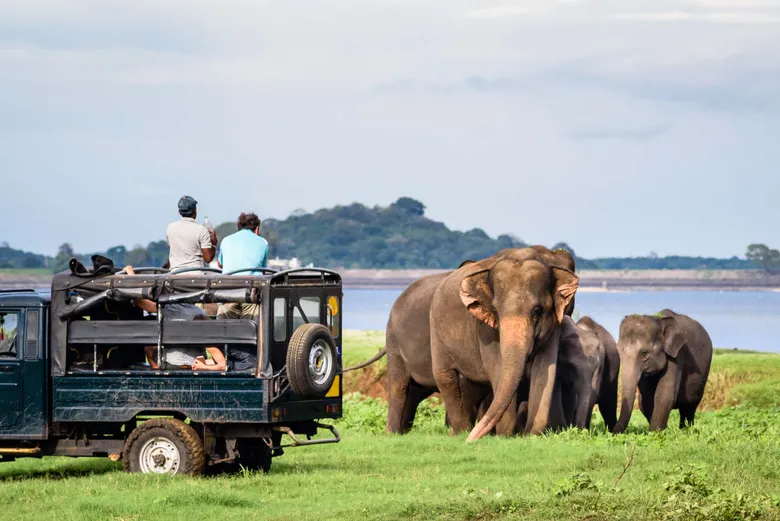
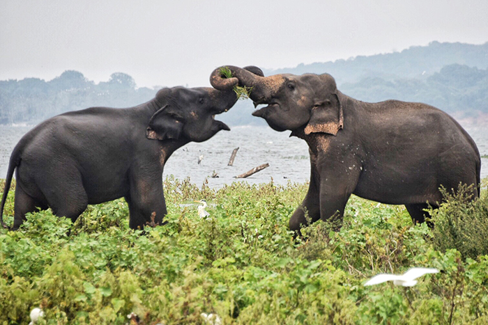
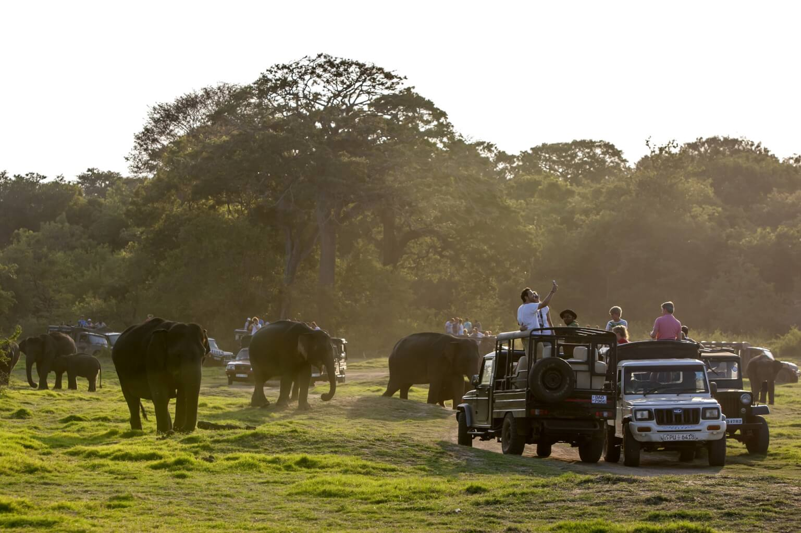
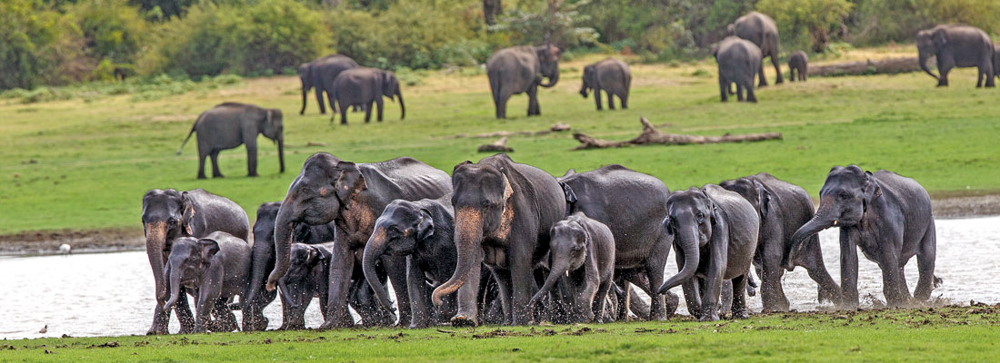
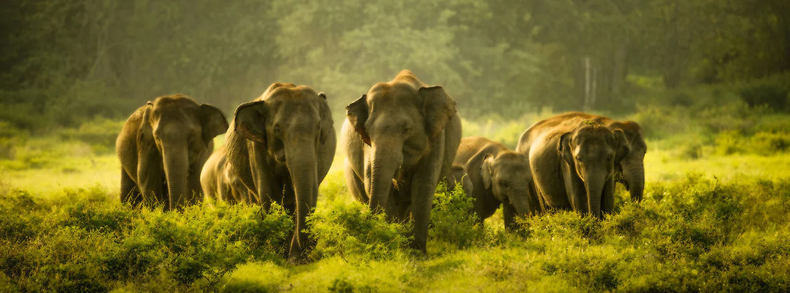
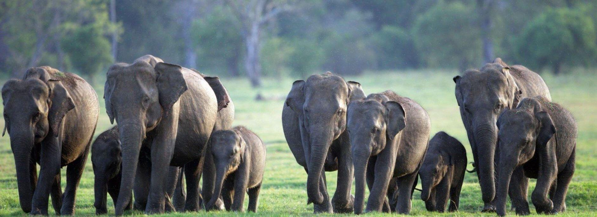
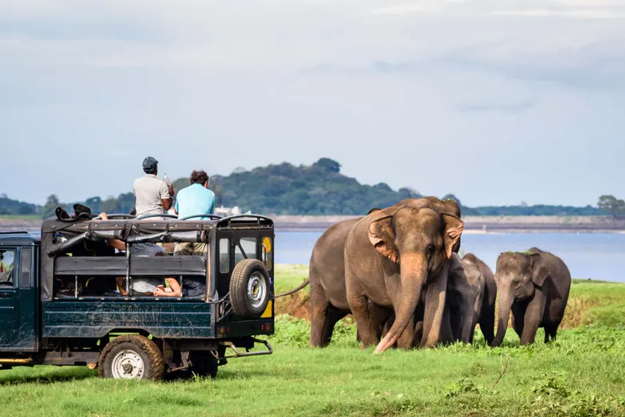
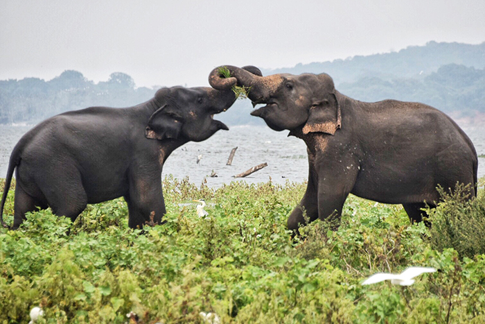
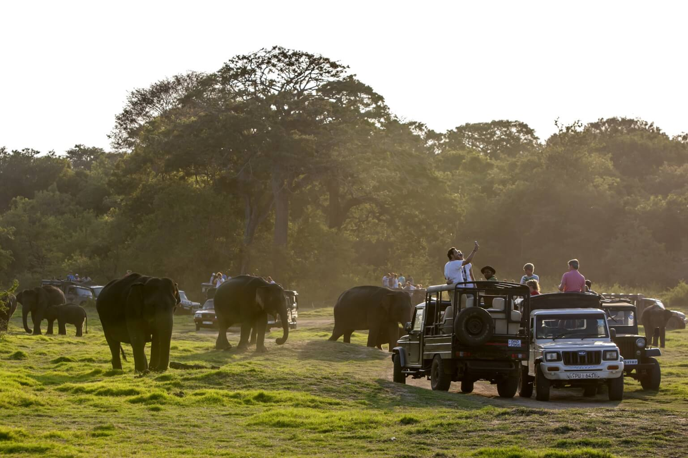
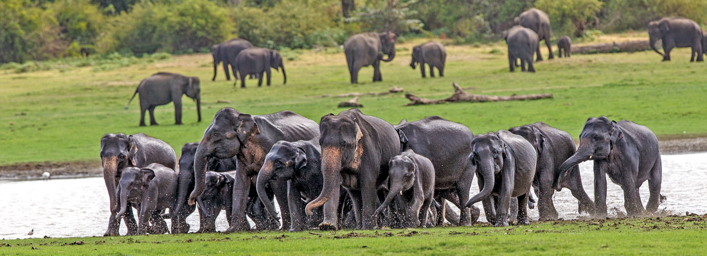
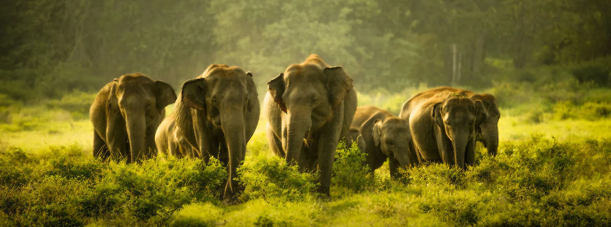
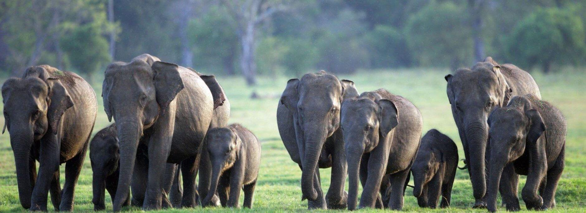
Flamingo Watching in Mannnar
Mannar, located in the Northern Province of Sri Lanka, is a great destination for flamingo watching. The district is home to several lagoons and wetlands that provide ideal habitats for flamingos and other bird species. One of the best places to go flamingo watching in Mannar is at the Vankalai Sanctuary, which is located on the western coast of Mannar. This sanctuary is home to a large population of Greater Flamingos, as well as other bird species such as pelicans, herons, and ibises. Visitors can enjoy a boat ride or a walk along the shore to observe the flamingos up close. Another popular spot for flamingo watching in Mannar is the Jaffna Peninsula, which is located just north of Mannar. The peninsula is home to several lagoons and bird sanctuaries, including the Point Pedro Bird Sanctuary and the Palaly Sanctuary, both of which are known for their flamingo populations. The best time to go flamingo watching in Mannar is during the dry season, which is from May to September. During this time, the water levels are low, making it easier to spot the birds. It is recommended to hire a local guide or join a guided tour to learn more about the birds and their habitats, and to ensure that you are observing the birds in a responsible and sustainable manner. Visitors can also explore the rich cultural and historical heritage of Mannar, which was a center of trade and commerce during ancient times. The Mannar Fort, built by the Portuguese in the 16th century, is a popular attraction, as are the Baobab trees that dot the landscape. Overall, Mannar offers a unique and exciting opportunity for visitors to observe flamingos in their natural habitats, while also experiencing the rich cultural heritage of the region.


Best Spot to watch Leopards
Sri Lanka is considered to be one of the best places in the world to observe leopards in their natural habitat. The island nation has a healthy population of leopards, which are a subspecies of the Indian leopard. The leopards in Sri Lanka are known for their larger size, lighter coat color, and distinct rosette patterns. Visitors to Sri Lanka can witness these majestic creatures in several national parks and wildlife reserves. Yala National Park, located in the southeastern region of Sri Lanka, is particularly renowned for its high density of leopards per square kilometer. Other national parks where leopards can be spotted include Wilpattu National Park and Horton Plains National park. Sri Lanka's diverse landscapes, including dense forests, grasslands, and coastal regions, provide an ideal habitat for leopards to thrive. This has led to a healthy leopard population in Sri Lanka, making it one of the best destinations in the world for observing these magnificent animals in their natural environment.
 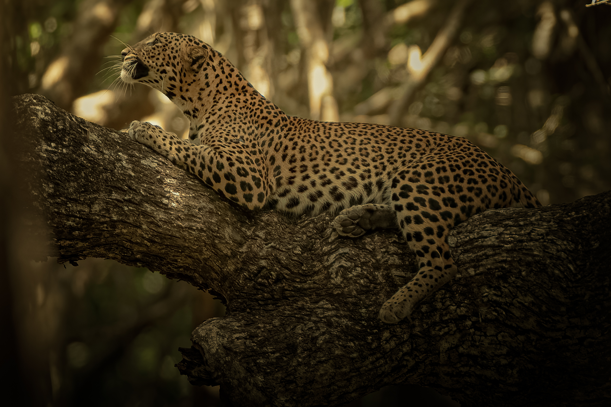
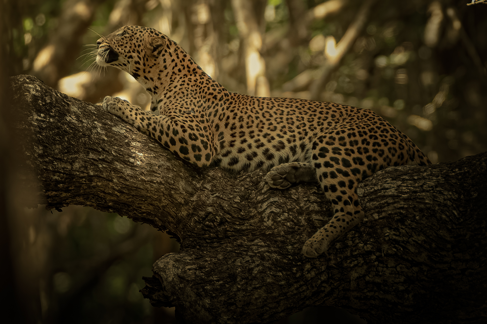


Whale Watching in Mirissa
Whale watching in Mirissa is an exhilarating experience that allows you to witness some of the largest creatures on earth in their natural habitat. Located in the southern coast of Sri Lanka, Mirissa is a popular destination for whale watching due to its abundance of marine life. During the whale watching season, which typically runs from November to April, visitors can take a boat tour out into the Indian Ocean to observe the majestic creatures. The most commonly spotted whales in Mirissa are the blue whales and sperm whales, which can grow up to 30 meters in length. These gentle giants are known to come up to the surface to breathe and can be seen spouting water from their blowholes as they exhale. Apart from whales, visitors can also spot other marine creatures such as dolphins and sea turtles during the boat tour. The tour usually takes around 3-5 hours and departs early in the morning to maximize the chances of spotting whales. It's important to choose a reputable tour operator that follows responsible whale watching practices and conservation guidelines to ensure that the experience is sustainable and ethical. Aside from whale watching, visitors can also enjoy other activities in Mirissa such as surfing, snorkeling, and relaxing on the beautiful beaches. The town is known for its laid-back vibe and friendly locals, making it a great destination for those who want to escape the hustle and bustle of city life.
Our Team
-

Jehan Fernando
-

Mineth Vismitha
-

Lakvindu Siriwardana
-

Sanuka Alles
© All Rights Reserved - Explore | Sri Lanka